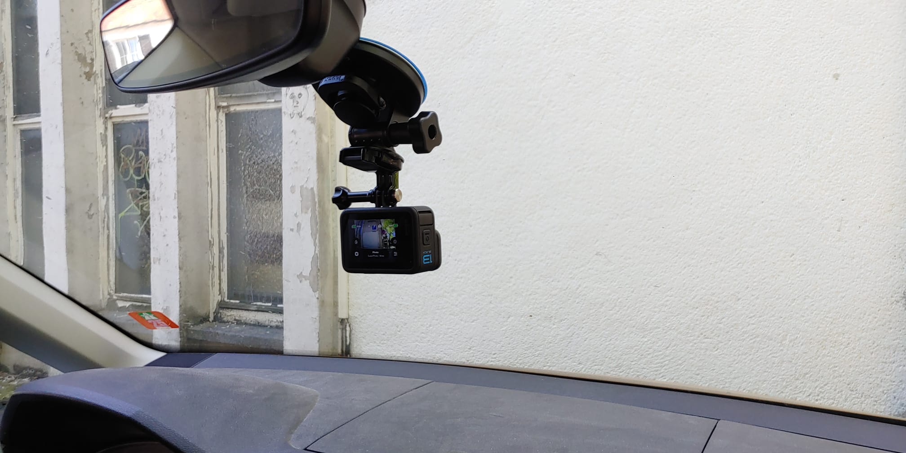
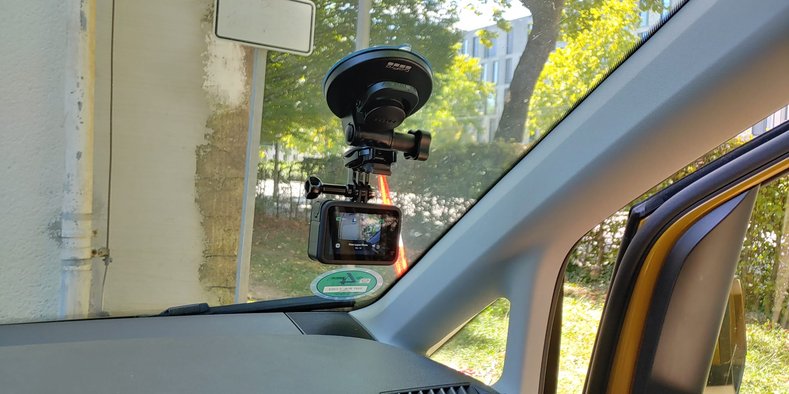
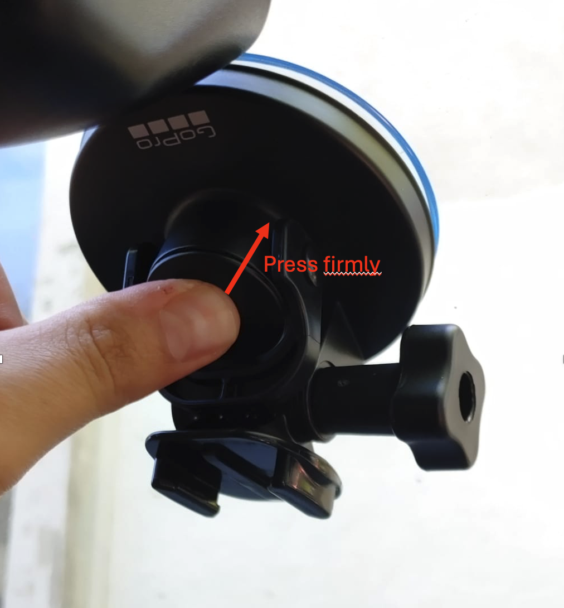
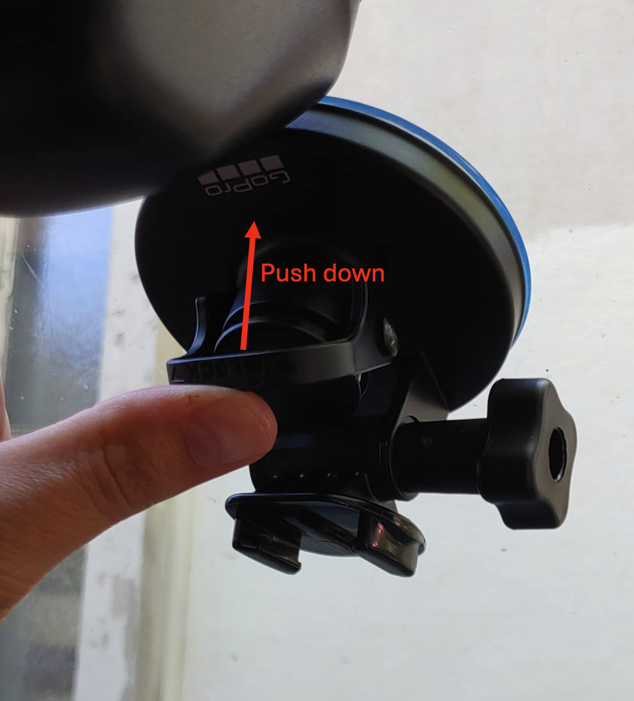
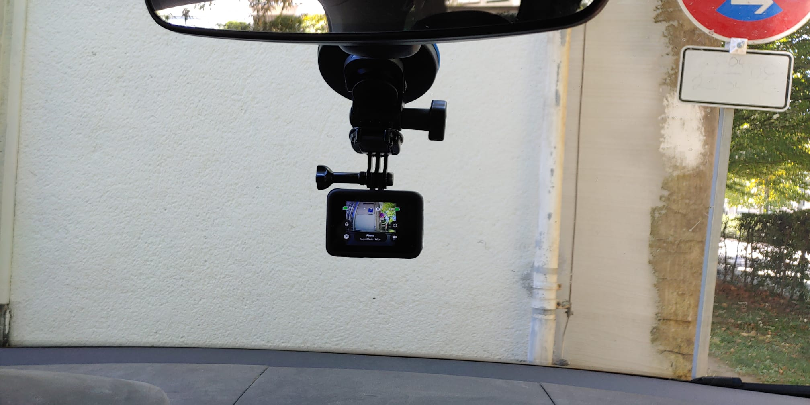
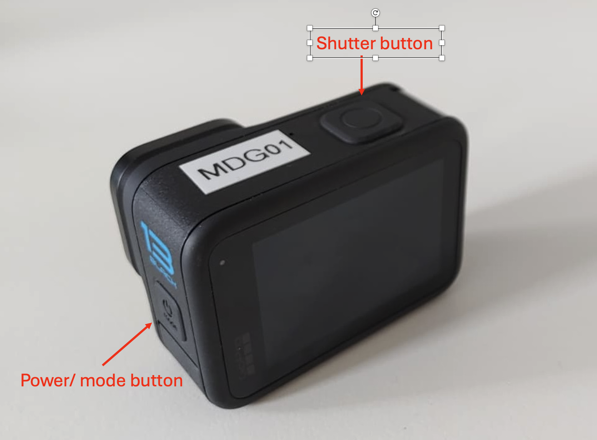

Guide d’utilisation de la caméra: projet AILAS#
Cette documentation fournit des instructions sur la configuration et l’utilisation des caméras GoPro pour l’acquisition de données sur le terrain, incluant des instructions détaillées pour toutes les étapes nécessaires, des listes de contrôle pour le début et la fin de l’acquisition des données, ainsi que des conseils pour le dépannage.
Liste de vérification du matériel#
Avant le départ, assurez-vous de disposer des éléments suivants :
Équipement |
|---|
GoPro Hero 13 |
Carte MicroSD 1 To |
Batterie externe (Powerbank) |
Câble de recharge USB-C |
Fixation ventouse pour GoPro |
Copie imprimée de ce guide |


Installation de la caméra#
Choisir l’emplacement de fixation#
Instructions |
Notes |
|---|---|
1. Fixez à l’intérieur de la voiture, au centre du pare-brise ou derrière le rétroviseur |
Évitez d’obstruer la vue du conducteur. |
2. Si nécessaire, nettoyez le verre avant de fixer la fixation ventouse |

Position centrale derrière le rétroviseur#

Position latérale près de la portière passager#
Fixer la GoPro avec la fixation ventouse#
Instructions |
Notes |
|---|---|
1. Appuyez fermement la ventouse contre le pare-brise |
Assurez-vous que le levier de verrouillage est en position HAUTE |
2. Appuyez sur le bouton de fixation avec une bonne force |
|
3. Abaissez le levier de verrouillage pour sécuriser la fixation |
Secouez légèrement la fixation pour vérifier qu’elle tient bien |
4. Fixez la GoPro avec la fixation clip et la vis papillon sur la fixation |
Assurez-vous que la GoPro est équipée de la fixation clip |
5. Ajustez l’angle de la caméra |
Vérifiez que l’objectif est orienté vers l’avant, parallèle à la route |
Astuce pour un alignement optimal de la caméra
Pour affiner l’angle de la caméra et obtenir un alignement optimal, dévissez légèrement la vis qui relie la GoPro à la fixation clip et ajustez légèrement l’angle de la caméra.
Pour éviter que la caméra ne soit inclinée sur un côté, assurez-vous que le logo « GoPro » sur la fixation ventouse est orienté bien droit vers le haut lors de la fixation.

Press button for suction#

Abaissez le levier pour fixer la fixation#

Caméra correctement alignée avec la route#
Alimentation#
Instructions |
Notes |
|---|---|
Connectez la GoPro à la batterie externe (Powerbank) avec le câble USB-C |
|
Placez la batterie externe en toute sécurité (par ex. boîte à gants ou tableau de bord) |
La batterie doit être stockée de manière sûre en cas de freinage brusque |
Vérifiez la connexion d’alimentation avant de conduire |
Le symbole de charge doit être visible en haut à droite de l’écran de la GoPro |
Utilisation de la prise de votre véhicule
Si votre véhicule dispose d’une prise adaptée pour se connecter au port USB-C de la caméra, vous pouvez l’utiliser à la place de la batterie externe. N’oubliez pas de débrancher après le trajet.
Configuration de la capture d’images#
Paramétrage des réglages#
Les réglages de la caméra peuvent être facilement configurés en scannant le QR code fourni avec la GoPro. Il s’agit de la configuration standard.
Si la configuration par QR code ne fonctionne pas, le réglage manuel est décrit ci-dessous.
Dans la mesure du possible, utilisez toujours la configuration par QR code.
Instructions |
Notes |
|---|---|
Maintenez enfoncé le bouton Power/Mode pour allumer la GoPro. |
|
Scannez le QR code suivant avec la GoPro en orientant l’objectif vers le code |
Si réussi, une icône QR_Code avec une coche rouge devrait apparaître |
Vérifiez que « AILAS » est affiché dans l’aperçu des modes en bas au centre de l’écran |
Si la caméra est déjà configurée en mode « AILAS », vous n’avez pas besoin de paramétrer les réglages.
Configuration par QR code#
Scannez ce QR code#

Button overview#

Camera est en mode AILAS#
Scanner le QR code
Si Si le scan du QR code ne fonctionne pas immédiatement, essayez dans des conditions de luminosité différentes ou en rapprochant la caméra du code.
Configuration manuelle alternative#
Instructions |
Remarques |
|---|---|
1. Appuyez sur le bouton Mode/Power jusqu’à ce que l’écran affiche « Accéléré » |
|
2. Touchez l’icône paramètres (en bas à droite) et configurez comme suit : |
Laissez les autres réglages inchangés |
3. Touchez la flèche de retour pour enregistrer et revenir à l’écran principal. |
En bas au centre de l’écran doit maintenant s’afficher : « Time Lapse Photo 5s W » |
4. Maintenez le bouton Power pour éteindre la GoPro à la fin du trajet. |
La caméra émettra quelques bips lors de l’extinction |
Liste de vérification avant de prendre la route#
Configuration de la caméra#
Fixez la caméra sur le pare-brise, orientée droit devant.
Connectez la Powerbank à la caméra avec le câble USB-C.
Rangez la Powerbank dans un endroit sûr pour qu’elle ne bouge pas pendant la conduite.
Démarrage de l’enregistrement#
Maintenez le bouton d’alimentation latéral jusqu’à ce que l’écran s’allume.
Scannez le QR code pour configurer les réglages (si cela ne fonctionne pas, utilisez la configuration manuelle).
Attendez environ 1 minute pour que la caméra capte le signal GPS
Appuyez sur le bouton déclencheur supérieur (le gros bouton sur le dessus) pour commencer la capture.
Vérifications finales avant de conduire#
La caméra est-elle bien fixée ?
La caméra est-elle de niveau et orientée droit devant ?
La GoPro clignote-t-elle toutes les 5 secondes (prise de photos) ?
La Powerbank est-elle connectée et en train de recharger la GoPro ?
Le réglage de l’orientation de la caméra est-il correct ? Si le menu à l’arrière de l’écran de la caméra s’affiche à l’envers, le réglage est incorrect.
Liste de vérification après la conduite#
Arrêt de l’enregistrement#
Appuyez sur le bouton déclencheur supérieur pour arrêter la capture.
Maintenez le bouton d’alimentation latéral jusqu’à ce que l’écran s’éteigne.
Débranchez le câble USB-C de la GoPro.
Inspection du matériel#
Vérifiez que le support est toujours bien serré et que la GoPro n’a pas été endommagée.
Nettoyez l’objectif de la caméra s’il est poussiéreux ou sale.
Laissez la GoPro solidement fixée si c’est sûr, ou rangez-la dans son étui ou son sac.
Recharger la Powerbank (le cas échéant)#
Branchez la Powerbank sur une prise murale pour la recharger pendant la nuit.
Signaler tout problème#
Contactez immédiatement le support technique si :
La GoPro n’a pas fonctionné
Le support est tombé et ne peut pas être réinstallé
La Powerbank ne s’est pas chargée
Quelque chose semble cassé ou inhabituel
Conseils de dépannage#
Problème |
Solution |
|---|---|
La GoPro ne s’allume pas |
Vérifiez le niveau de la batterie ou connectez la Powerbank |
Les photos ne sont pas prises |
Assurez-vous que le mode « AILAS » est actif et que le déclencheur est pressé |
La Powerbank ne charge pas |
Vérifiez la connexion du câble ; essayez un autre port USB |
Le support à ventouse se détache |
Nettoyez la vitre et refixez-le (à un autre endroit) |
La GoPro émet des bips/surchauffe |
Éteignez-la pendant 5 min à l’ombre, puis reprenez |
Le QR code n’est pas scanné |
Utilisez un autre code ou effectuez une configuration manuelle |
Dépannage : Menu à l’envers#
Si le menu s’affiche à l’envers sur l’écran de la caméra comme dans l’image ci-dessous, les images seront également enregistrées avec une mauvaise orientation.

Le menu de la caméra est affiché à l’envers. Corrigez cela avant de commencer l’enregistrement.#
Procédez comme suit pour corriger le problème avant de commencer à enregistrer :
Faites glisser vers le bas depuis le haut de l’écran pour ouvrir le menu des paramètres.
Désactivez le verrouillage de l’orientation :


{kind=link}
{kind=link}
{kind=link}
{kind=link}
{kind=link}
{kind=link}
{kind=link}
Scannez à nouveau le QR code pour vous assurer qu’aucun autre paramètre n’a été modifié par erreur.
---
Contact support#
En cas de problème ou de doute, n’hesitez pas à contacter :
Alec Schulze-Eckel & Oliver Fritz
humanitarian_gi@heigit.org